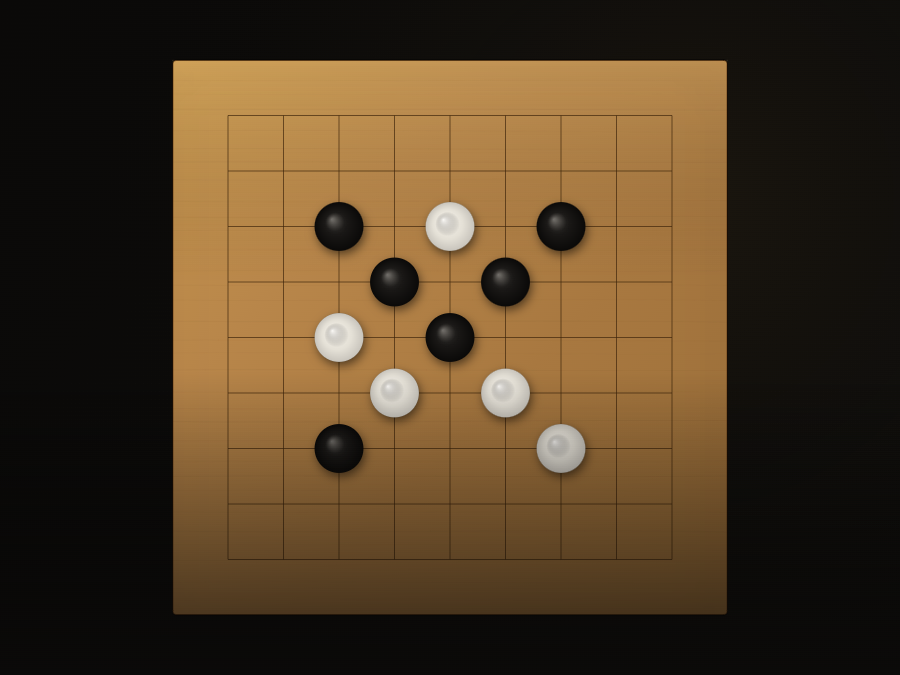
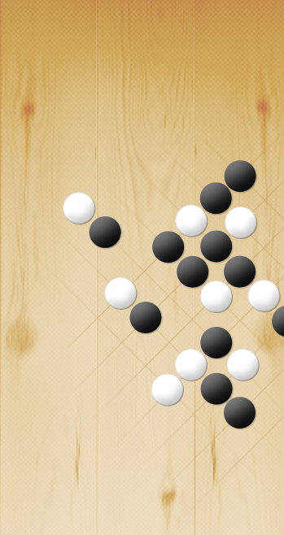

Öğren
Kısa, etkileşimli derslerle kuralları ve temel teknikleri kavra.
Kurallardan ilk 9×9 oyununa uzanan Türkçe ve etkileşimli bir öğrenme yolu.

Kısa, etkileşimli derslerle kuralları ve temel teknikleri kavra.
9×9 tahtada hamle yaparak bilgiyi oyuna dönüştür.
Problemlerle örüntüleri gör, eksiklerini hemen fark et.
Nereden başlayacağını bilmiyorsan bu sırayı izle.
Küçük tahtada hızlı bir parti yap; hamlelerini deneyerek temel kararları pekiştir.
Temel seviye 9×9 pratik robotu
9×9 Oyuna Başla
Go öğrenmek için deneyimli olmak gerekmez. Sadece merak yeterli.
"Go öğrenmek için deneyimli olmak gerekmez. Sadece merak yeterli."
Jiraf Coffee & Book, Antalya
2013'te birkaç meraklının bir kafede bir araya gelmesiyle başladı. Kimse o gün on yılı aşkın bir serüvenin kapısını araladığını bilmiyordu.
Bugün Antalya Go Topluluğu; düzenli buluşmalar, turnuvalar ve bu öğrenme platformuyla şehrin en köklü düşünce çevrelerinden biri olmaya devam ediyor.
Topluluğun kuruluş turnuvası — Antalya'da Go serüveninin başlangıcı.
Belediye desteğiyle ilk kurumsal organizasyon.
Tarih ve mekân bilgisi derleniyor.